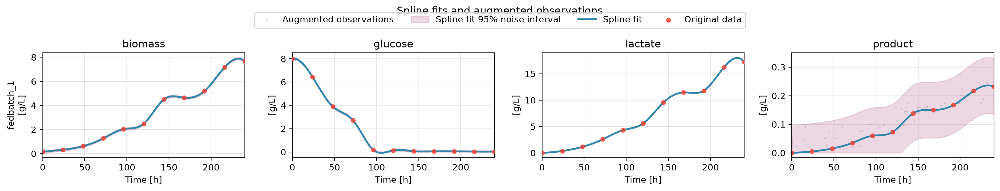

Augmentation¶
Demonstrates. Generating synthetic sibling processes from a single run with
prepare.augmentation, the automatic diagnostic plot, andaugment_state_valuesfor per-state control over what gets generated.
demo_fedbatch is one run. That is a real, common situation: a single mammalian
fed-batch campaign, expensive to repeat, with too little data on its own to train
anything but the simplest model. Augmentation trades that for more (synthetic, noisy)
training signal, without pretending you have more real experiments than you do.
The walkthrough below shows the file in pieces, next to the reasoning for each one. For the whole thing at once: to copy, diff against your own, or just read top to bottom:
Full custom.py
1"""Augmenting a single fed-batch run: splines first, then a monotonicity fix.
2
3Two things a plain "just turn on augmentation" attempt misses:
4
51. Augmentation resamples each modeled state onto new timepoints, which needs
6 a fitted spline, not just the raw measured samples. `demo_fedbatch` (like
7 any freshly loaded hybrax.format file) has none yet: `transform_process_collection`
8 fits one per modeled reactor-medium component before augmentation runs.
92. Default augmentation adds independent Gaussian noise to every measured
10 timepoint. That is fine for glucose or biomass, but ``product`` here is a
11 cumulative quantity: it should never decrease, and independent noise can
12 easily produce a synthetic child where it does. ``augment_state_values``
13 fixes exactly that, only for the state that needs it.
14"""
15
16import numpy as np
17
18from hybrax.format.splines import fit_timeseries_spline
19
20
21def transform_process_collection(collection, config):
22 del config
23 for process in collection.processes.values():
24 for component in process.reactor_medium.components.values():
25 component.concentration = fit_timeseries_spline(
26 component.concentration, smoothing_s=0.0
27 )
28 return collection
29
30
31def augment_state_values(
32 *, parent_name, child_name, state_name, times, base_values, augmented_values, config
33):
34 del parent_name, child_name, times, base_values, config
35 if state_name != "product":
36 return augmented_values
37 # Default noise already computed; just repair monotonicity in-place.
38 return np.maximum.accumulate(augmented_values)
Everything below runs in WORK, printed at the end: inspect, copy or modify the real
files it produced.
Configuration¶
prepare.augmentation is most of it: how many synthetic children per parent, how many
resampled timepoints each has, and a relative noise level per state.
{
"n_children_per_process": 5,
"n_time_points": 11,
"noise_std": {"biomass": 0.05, "glucose": 0.05, "lactate": 0.05, "product": 0.05}
}
Only states named in noise_std are touched. n_time_points need not match the
parent’s own sampling: children are resampled, not resliced.
Splines first¶
1def transform_process_collection(collection, config):
2 del config
3 for process in collection.processes.values():
4 for component in process.reactor_medium.components.values():
5 component.concentration = fit_timeseries_spline(
6 component.concentration, smoothing_s=0.0
7 )
Augmentation resamples each modeled state onto new timepoints, and that needs a fitted
spline, not just the raw measured samples. A freshly loaded hybrax.format file has none:
without this hook, prepare fails fast with "modeled state 'biomass' requires a spline" rather than guessing. custom_py must be set at the top level of the config
(not inside prepare) for prepare to pick this hook up at all.
UserWarning: fedbatch_1: spline for reactor-medium component 'glucose' evaluated below zero during augmentation
What got generated¶

hybrax prepare writes this diagnostic automatically whenever augmentation is
configured: grey dots are the synthetic children, the blue line is the fitted spline,
red dots the real measurements. Worth checking before training on it: noise that looks
wrong here will look wrong in every downstream fit too.
glucose crashes to near zero and stays there for most of the run (the same shape as
Fed-batch), and the warning above is exactly that: the fitted spline
dips slightly negative between two closely-spaced near-zero measurements. Augmentation
clips every reactor-medium child value to ≥ 0 afterward, so this does not produce a
physically invalid concentration, but it is a real sign to look at the plot rather than
trust the config blindly.
Fixing what default noise gets wrong¶
1
2def augment_state_values(
3 *, parent_name, child_name, state_name, times, base_values, augmented_values, config
4):
5 del parent_name, child_name, times, base_values, config
6 if state_name != "product":
7 return augmented_values
product accumulates and should never decrease, but independent Gaussian noise per
timepoint does not know that. The hook receives the noised values after the default
transform and can repair them: here, a running maximum.
5 synthetic children from 1 parent
fedbatch_1__aug_000: parent=fedbatch_1 product monotone=True
fedbatch_1__aug_001: parent=fedbatch_1 product monotone=True
fedbatch_1__aug_002: parent=fedbatch_1 product monotone=True
/tmp/ipykernel_2036207/1178419899.py:19: UserWarning: fedbatch_1: spline for reactor-medium component 'glucose' evaluated below zero during augmentation
augmented = augmentation.augment_process_collection(raw, cfg, custom.augment_state_values)
Training on the enlarged dataset¶
2026-08-27 13:15:46 INFO __main__: training complete: first_mean_loss=356.227 last_mean_loss=1.14974 delta=-355.077
Nothing about training changes: augmentation happens entirely at prepare time, and by
the time train runs, the synthetic children are just more processes in the store.
run directory: ./source/_data/out/runs/gallery_augmentation/run
prepared augmentation diagnostic: ./source/_data/out/runs/gallery_augmentation/prepared/augmented-data.png
Gotchas¶
Augmentation needs a fitted spline on every state it touches. Fit one in
transform_process_collectionbefore augmenting; a freshly loaded file has none.custom_pyis a top-level config key, not nested insideprepare. Nesting it there silently means no hooks are found (prepare hooks default: transform_process_collection, augment_state_valuesin the log is the tell).Only states named in
noise_stdare generated with noise; everything else is copied from the parent’s resampled trajectory unchanged.augment_state_valuesruns after the default noise, not instead of it: it receivesaugmented_valuesalready populated, to adjust rather than replace outright.A spline can dip below zero between measurements, especially near sharp features like a near-zero glucose plateau. Reactor-medium children are clipped to
≥ 0afterward, but check the diagnostic plot for any state where this matters.Cross-validation must stay group-aware. A parent and its synthetic children carry the same information; splitting them across train and holdout leaks the answer. Use
hybrax.train’s LOO (worked example), which handles this for you.This does not manufacture new information. It resamples and perturbs what one run already told you; it cannot substitute for an experiment you have not run.
See also¶
Run the example yourself at ./source/_data/out/runs/gallery_augmentation/.
Prepare: the config reference.
Cross-validation, worked: why augmented data needs group-aware folds.
Fed-batch: the un-augmented version of this same dataset.